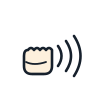

上面的總綱，拆開就是下面這十項。每一項都可以單獨拿出來練，也可以合起來檢查一段完整的表達。
| # | 一句話 | 對應的模組 | 單獨練的時候看什麼 |
|---|---|---|---|
| 01 | 身體要穩 | 身體姿態與播音狀態 | 站得穩、肩頸鬆，站三分鐘不晃不塌 |
| 02 | 氣息要足 | 呼吸與氣息控制 | 一口氣撐得住一整句，句尾不虛不抖 |
| 03 | 聲音有支撐 | 胸支與聲音支撐 | 用氣息托住聲音，不是用喉嚨擠出來 |
| 04 | 聲音要鬆 | 發聲與嗓音保護 | 明亮、自然、不硬喊；練完喉嚨不累 |
| 05 | 共鳴要集中 | 共鳴調節 | 聲音送到最後一排也不費力，不散也不悶 |
| 06 | 吐字要清楚 | 吐字歸音與口部控制 | 字頭乾淨、字腹飽滿、字尾收得俐落 |
| 07 | 語音要規範 | 普通話語音規範 | 聲母、韻母、聲調準確，不只停在繞口令 |
| 08 | 節奏要分明 | 停連、重音、語氣與節奏 | 停頓和重音落在對的位置，不逐字念稿 |
| 09 | 稿件要讀懂 | 稿件理解與朗讀表達 | 先讀懂再讀出，把訊息說給對面的人聽 |
| 10 | 表達要自然 | 即興表達與主持控場 | 沒有完整稿件也接得住，現場出意外不慌 |
點進去看每一項的訓練目標、具體方法和檢查標準。
站得穩，氣才順；狀態對了，聲音才對。
讓一口氣撐得住一整句，句尾不虛不抖。
用氣息托住聲音，而不是用喉嚨硬擠。
明亮、自然、耐用——不是越大聲越好。
讓聲音集中、有穿透力，不散也不悶。
字頭清楚、字腹飽滿、字尾收得乾淨。
聲、韻、調，連詞彙和語法都要站得住。
讓聽眾聽得出重點，而不是逐字念稿。
從「讀文字」變成「把一件事說給人聽」。
沒稿也能說清楚，有事也能兜得住。
同一套基本功，在不同年齡段有不同的入口。年紀小的先玩聲音，技巧在玩的過程中長出來。
用五操（口部操、發音力度、話筒操、眼神操、手勢操）把「嘴巴、聲音、器材、眼神、手」逐一分開來玩。
氣息穩了、字音準了，才開始練停連、重音與語氣。繞口令從慢到快，朗讀從標記到自然。
新聞播報、即興評述、活動主持、比賽與演出。稿件理解、時間控制、現場應變一起上。
每一操都做成可以玩的關卡：抽卡、變速火車、話筒距離、眼神星星、手勢翻卡。
嘴巴健身房

字頭小拳王
話筒小管家
眼神導航員
小小指揮家
獨誦練「我一個人把話說好」；集誦練「我們一群人把話說成同一句」。
一起呼吸、一起起句、一起收乾淨，同一個節奏與咬字。
主音部、高音部、低音部各安其位；全體、小組、個人的切換不塌。
用耳朵跟同伴對齊，不壓過別人，也不被旁邊拉走。